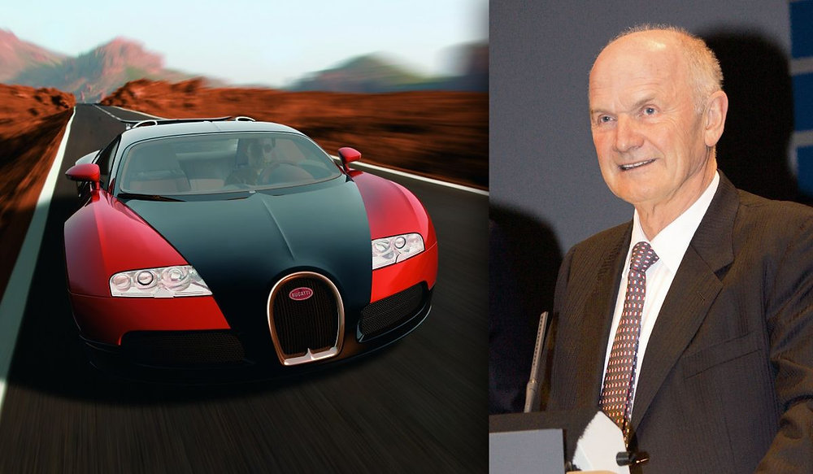

History & Legacy
The Bugatti Veyron didn’t just set speed records; it changed what people expected from a supercar. Its combination of extreme performance, advanced technology, and luxury craftsmanship made it a symbol of automotive innovation. Many modern hypercars draw inspiration from the Veyron’s engineering, from its powerful W16 engine to its precise aerodynamics and all-wheel-drive system. Even after production ended, the Veyron remains an icon, remembered for pushing the limits of speed, design, and automotive ambition.
Read more about the Veyron’s history and legacy on Bugatti’s official newsroom
- Produced: 2005–2015
- Total units made: 450
- Influence: Inspired next-generation hypercars and modern Bugatti models
- Record-breaking: Set multiple speed records during its production run
- Cultural impact: Featured in films, games, and automotive history books
- Future: Continues to represent the peak of engineering, luxury, and performance
